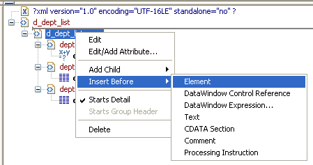
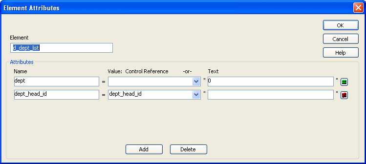

Using templates for data import If you use a template created for data export, DataWindow expressions,
text, comments, and processing instructions are ignored when data
is imported. If you are creating a template specifically for import,
do not add any of these items. You need only map column names to
element and attribute names.
Using templates for data import If you use a template created for data export, DataWindow expressions,
text, comments, and processing instructions are ignored when data
is imported. If you are creating a template specifically for import,
do not add any of these items. You need only map column names to
element and attribute names.
Every item in the Export/Import Template view has a pop-up menu from which you can perform actions appropriate to that item, such as editing or deleting the item, adding or editing attributes, adding child elements or other items, and inserting elements, processing instructions, CDATA sections, and so forth, before the current item.

If an element has no attributes, you can edit its tag in the Export/Import Template view by selecting it and left-clicking the tag or pressing F2. Literal text nodes can be edited in the same way. You can delete items (and their children) by pressing the Delete key.
The examples in this section show the delimiters used in the XML document. When you edit the template in dialog boxes opened from the Export/Import Template view for XML, you do not need to type these delimiters in text boxes.
The rest of this section describes some of the items in the template. For more information, see the XML specification .
The XML declaration specifies the version of XML being used. You may need to change this value for a future version of XML. It can also contain an encoding declaration and a standalone document declaration. From the pop-up menu, you can edit the declaration, and, if the document is well-formed, delete it. If you have deleted the XML declaration, you can insert one from the Insert Before item on the pop-up menu for the next item in the template.
The encoding declaration specifies the character-set encoding used in the document, such as UTF-16 or ISO-10646-UCS-4.
If there is no encoding declaration, the value defaults to UTF-16LE encoding in ASCII environments. In DBCS environments, the default is the default system encoding on the computer where the XML document is generated. This ensures that the document displays correctly as a plain text file. However, since the DBCS data is serialized to Unicode, XML documents that use UTF-16LE, UTF-16 Big Endian, or UTF-16 Little Endian can all be parsed or generated correctly on DBCS systems.
Several other encodings are available, including ASCII, UCS4 Big Endian, UCS4 Little Endian, EBCDIC code pages IBM037 and IBM1140, ISO Latin-1, and Latin 1 Windows (code page 1252). You can select these values from a drop-down list box in the XML Declaration dialog box.
The standalone document declaration specifies whether the document contains no external markup that needs to be processed and can therefore stand alone (Yes), or that there are, or might be, external markup declarations in the document (No). The value in the default template is No, and if there is no standalone document declaration, the value is assumed to be No.
This is an XML declaration that specifies XML version 1.0, UTF-16LE encoding, and that the document can stand alone:
<?xml version="1.0" encoding="UTF-16LE" standalone="yes"?>
The document type declaration contains or points to markup declarations that provide a grammar for a class of documents. This grammar is known as a document type definition, or DTD. The document type declaration defines constraints on the sequence and nesting of tags, attribute values, names and formats of external references, and so forth. You can edit the document type declaration to change its name, but the name must always be the same as the name of the root element. Changing the name in either the document type declaration or the root element automatically changes the name in the other.
You can add an identifier pointing to an external DTD subset, and you can add an internal DTD subset. If you supply both external and internal subsets, entity and attribute-list declarations in the internal subset take precedence over those in the external subset.
An external identifier can include a public identifier that an XML processor can use to generate an alternative URI. If an alternative URI cannot be generated, the URI provided in the system identifier is used. External identifiers without a public identifier are preceded by the keyword SYSTEM. External identifiers with a public identifier are preceded by the keyword PUBLIC.
 Exporting metadata If you specify a system or public identifier and/or
an internal subset in the Document Type Declaration dialog box,
a DTD cannot be generated when the data is exported to XML. A MetaDataType
of XMLDTD! is ignored. For more information about the properties
that control the export of metadata, see "Exporting metadata".
Exporting metadata If you specify a system or public identifier and/or
an internal subset in the Document Type Declaration dialog box,
a DTD cannot be generated when the data is exported to XML. A MetaDataType
of XMLDTD! is ignored. For more information about the properties
that control the export of metadata, see "Exporting metadata".
These are examples of valid document type declarations.
An external system identifier:
<!DOCTYPE d_dept_listing SYSTEM "d_dept_listing.dtd">
An external system identifier with a public identifier:
<!DOCTYPE d_test PUBLIC "-//MyOrg//DTD Test//EN"
"http://www.mysite.org/mypath/mytest.dtd">
An external system identifier with an internal DTD. The internal DTD is enclosed in square brackets:
<!DOCTYPE d_orders
SYSTEM "http://www.acme.com/dtds/basic.dtd"[
<!ELEMENT Order (Date, CustID, OrderID, Items*)>
<!ELEMENT Date (#PCDATA)>
<!ELEMENT CustID (#PCDATA)>
<!ELEMENT OrderID (#PCDATA)>
<!ELEMENT Items (ItemID, Quantity)>
<!ELEMENT ItemID (#PCDATA)>
<!ELEMENT Quantity (#PCDATA)>
]>
You can change the name of the root element, add attributes and children, and insert comments, instructions, and, if they do not already exist, XML and/or document type declarations before it.
Changing the name of the root element changes the name of its start and end tags. You can change the name using the Edit menu item, or in the Element Attributes dialog box. Changing the name of the document type declaration, if it exists, also changes the name of the root element, and vice versa. The root element name is always the same as the document type declaration name.
You can add the following kinds of children to the root element:
Adding a DataWindow control reference opens a dialog box containing a list of the columns, computed fields, report controls, and text controls in the document.
Control references can also be added to empty attribute values or element contents using drag-and-drop from the Control List view. Column references can also be added using drag-and-drop from the Column Specifications view.
 Drag-and-drop cannot replace You cannot drag-and-drop an item on top of another item to
replace it. For example, if you want to replace one control reference
with another control reference, or with a DataWindow expression, you first
need to delete the control reference you want to replace.
Drag-and-drop cannot replace You cannot drag-and-drop an item on top of another item to
replace it. For example, if you want to replace one control reference
with another control reference, or with a DataWindow expression, you first
need to delete the control reference you want to replace.
Adding a DataWindow expression opens the Modify Expression dialog box. This enables you to create references to columns from the data source of the DataWindow object. It also enables the calling of global functions. One use of this feature is to return a fragment of XML to embed, providing another level of dynamic XML generation.
If you use a control reference or a DataWindow expression that does not include a string to represent Date and DateTime columns in a template, the XML output conforms to ISO 8601 date and time formats. For example, consider a date that displays as 12/27/2004 in the DataWindow object, using the display format mm/dd/yyyy. If the export template does not use an expression that includes a string, the date is exported to XML as 2004-12-27.
However, if the export template uses an expression that combines a column with a Date or DateTime datatype with a string, the entire expression is exported as a string and the regional settings in the Windows registry are used to format the date and time.
Using the previous example, if the short date format in the registry is MM/dd/yy, and the DataWindow expression is: "Start Date is " + start_date, the XML output is Start Date is 12/27/04.
Controls or expressions can also be referenced for element attribute values. Select Edit/Add Attribute from the pop-up menu for elements to edit an existing attribute or add a new one.
For each attribute specified, you can select a control reference from the drop-down list or enter a literal text value. A literal text value takes precedence over a control reference. You can also use the expression button to the right of the Text box to enter an expression.

The expression button and entry operates similarly to DataWindow object properties in the Properties view. The button shows a green equals sign if an expression has been entered, and a red not-equals sign if not. A control reference or text value specified in addition to the expression is treated as a default value. In the template, this combination is stored with the control reference or text value, followed by a tab, preceding the expression. For example:
attribute_name=~"text_val~~tdw_expression~"
Report controls can be referenced in the Detail section of export templates as children of an element.
 Nested reports supported for XML export only Import does not support nested reports. If you attempt to
import data in any format, including XML, CSV, DBF, and TXT, that
contains a nested report, the nested report is not imported and
the import may fail with errors.
Nested reports supported for XML export only Import does not support nested reports. If you attempt to
import data in any format, including XML, CSV, DBF, and TXT, that
contains a nested report, the nested report is not imported and
the import may fail with errors.
For composite reports that use the Composite presentation style, the default template has elements that reference each of its nested reports.
If a composite DataWindow contains two reports that have columns with identical names, you must use the procedure that follows if you want to generate an XML document with a DTD or schema. If you do not follow the procedure, you will receive a parsing error such as "Element 'identical_column_name' has already been declared."
These steps are necessary because you cannot use a given element name more than once in a valid DTD or schema.
For report controls added to the detail band of a base report that is related to the inserted report with retrieval arguments or criteria, the report control is available to the export template in two ways:
When you export XML using a template that has a reference to a report control, the export template assigned to the nested report with the Use Template property is used, if it exists, to expand the XML for the nested report. If no template is specified for the nested report, the default template is used.
The relationship between the nested report and the base report, for example a Master/Detail relationship, is reflected in the exported XML.
You can export the name of a column in a CDATA section using the syntax <![CDATA[columnname]]>. You can export the value of a column using the syntax <![CDATA[~t columnname]]>. The ~t is used to introduce a DataWindow expression, in the same way that it is used in the Modify method. You can also use an expression such as ~t columnname*columnname to export a computed value to the XML.
You can import a value into a column using the syntax <![CDATA[ columnname]]>. Note that this syntax in a template has different results for import and export: it imports the column value but exports the column name.
You cannot import an XML file that has a ~t expression in a CDATA section.
Everything else inside a CDATA section is ignored by the parser. If text contains characters such as less than or greater than signs (< or >) or ampersands (&) that are significant to the parser, it should be defined as a CDATA section. A CDATA section starts with <![CDATA[ and ends with ]]>. CDATA sections cannot be nested, and there can be no white space characters inside the ]]> delimiter—for example, you cannot put a space between the two square brackets.
<![CDATA[
do not parse me
]]>
This syntax in an export template exports the value of the column emp_salary:
<![CDATA[~t emp_salary]]>
This syntax in an import template imports the value of the column emp_salary:
<![CDATA[emp_salary]]>
Comments can appear anywhere in a document outside other markup. They can also appear within the document type declaration in specific locations defined by the XML specification.
Comments begin with <!-- and end with -->. You cannot use the string -- (a double hyphen) in a comment, and parameter entity references are not recognized in comments.
<!-- this is a comment -->
Processing instructions (PIs) enable you to provide information to the application that uses the processed XML. Processing instructions are enclosed in <? and ?> delimiters and must have a name, called the target, followed by optional data that is processed by the application that uses the XML. Each application that uses the XML must process the targets that it recognizes and ignore any other targets.
The XML declaration at the beginning of an XML document is an example of a processing instruction. You cannot use the string xml as the name of any other processing instruction target.
In this example, usething is the name of the target, and thing=this.thing is the data to be processed by the receiving application:
<?usething thing=this.thing?>